Hanoi now requires households to sort their waste, but people decide in seconds at the bin, usually with no guidance. We built AWARE, an iOS app that recognises seven common waste types with an on-device YOLO26n detector and explains, step by step, where each item goes under Hanoi's rules, with no internet. We drew training data from 3,131 public images (TACO, Open Images V7) and tested on 113 photos we took ourselves. On a 2018 iPhone XR the 5 MB model ran at 24 FPS (25 ms per frame). Accuracy on our photos was mAP50 0.30: strong for cans (0.72) and bags (0.57), weak for cardboard and styrofoam, which we trace to domain shift and class imbalance. A 30-day pilot with 500 students will test whether sorting improves, and whether it lasts.
Build a phone app that identifies everyday waste and gives Hanoi sorting guidance in real time, with no internet.
| Criterion | Target | Result |
|---|---|---|
| Waste types | 7 common classes | ✓ 7 |
| Runs on the phone | No server, no upload | ✓ Core ML |
| Speed, iPhone XR (2018) | ≥ 10 frames / s | ✓ 24 FPS |
| Delay per frame (p95) | ≤ 100 ms | ✓ 31 ms |
| Model size · memory | ≤ 25 MB · ≤ 500 MB | ✓ 5 · 78 MB |
| Local rules | Hanoi 2026, step by step | ✓ 7 / 7 |
| Accuracy, our photos | As high as possible | mAP50 0.30 |
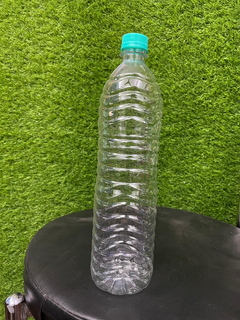
29Plastic bottle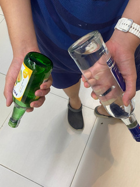
23Glass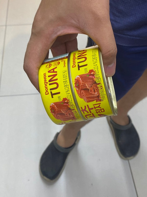
14Metal can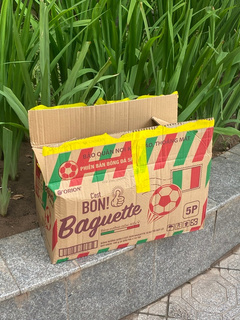
29Cardboard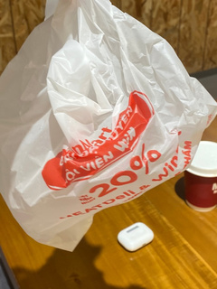
16Plastic bag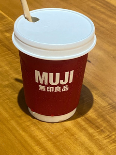
18Disposable cup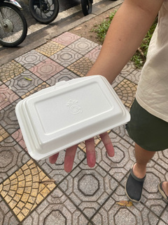
10Styrofoam| Model | YOLO26n, COCO start |
| Input | 640 × 640 px |
| Epochs | 171 (best: 131) |
| GPU | 1 × A100, 28 min |
| Export | Core ML, 16-bit |
| Check | 82 / 82 boxes match PyTorch |
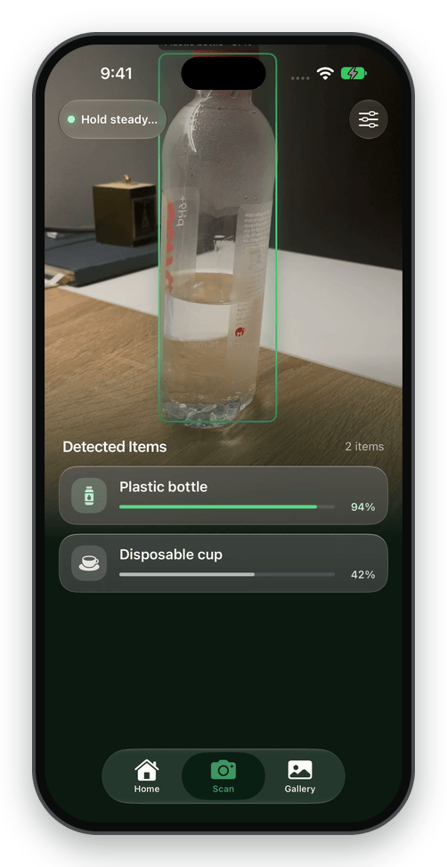
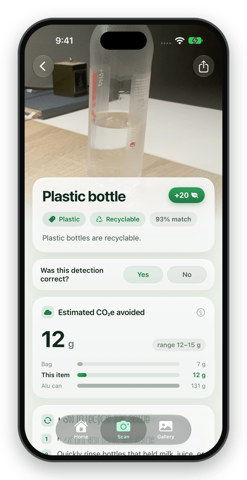
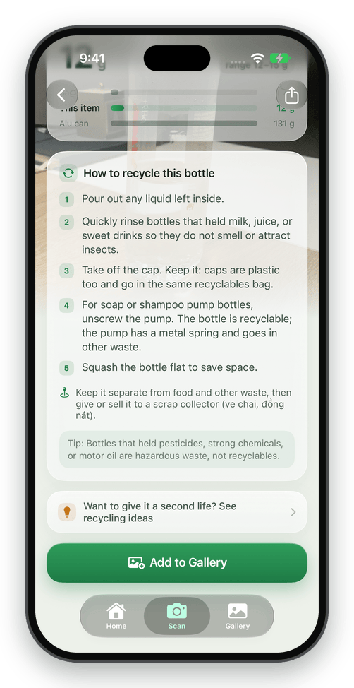
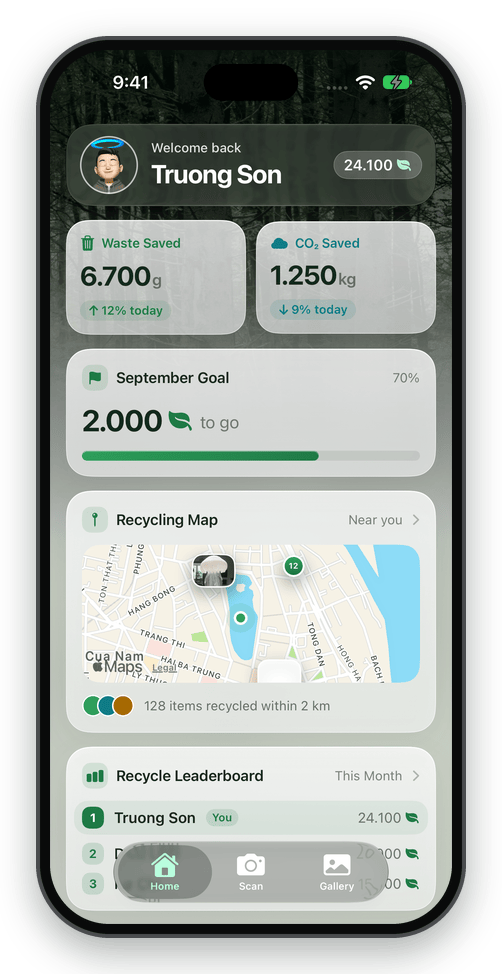
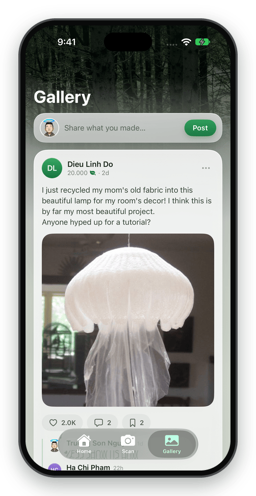
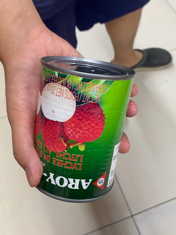
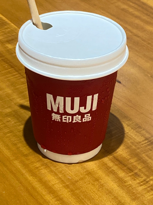
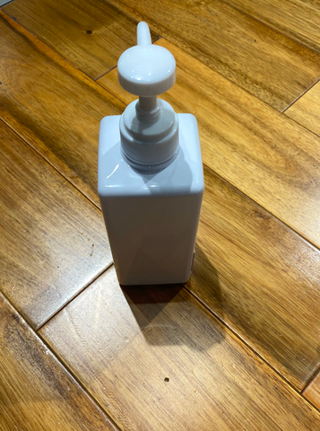
| We measure | How |
|---|---|
| Sorting accuracy | Count right vs wrong items in each bin, pilot vs control, W0 → W4 |
| Does it last? | Same count at W8; weekly active users in the app |
| Recyclables | kg per week, weighed by the waste collector |
| Knowledge | 10-item sorting quiz, before and after |
| AI in real use | % of scans confirmed vs corrected |
Real use, continuous improvement. Every “Was this correct?” answer is a labelled Vietnamese photo. Steps 1–2 are built; 3–5 start in the pilot.